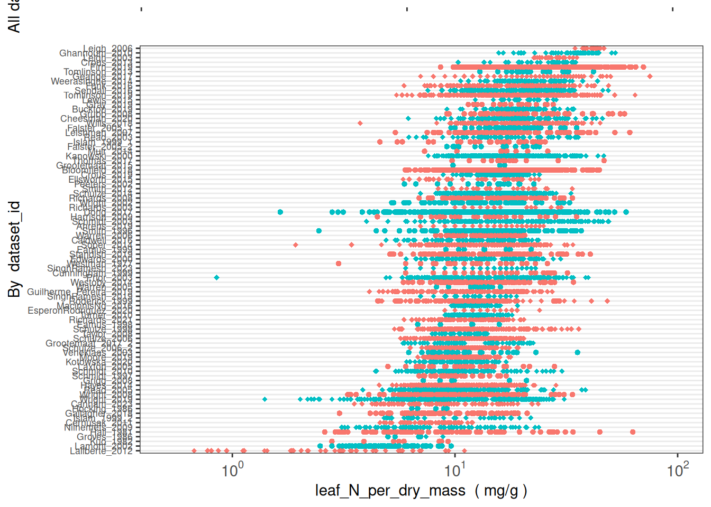
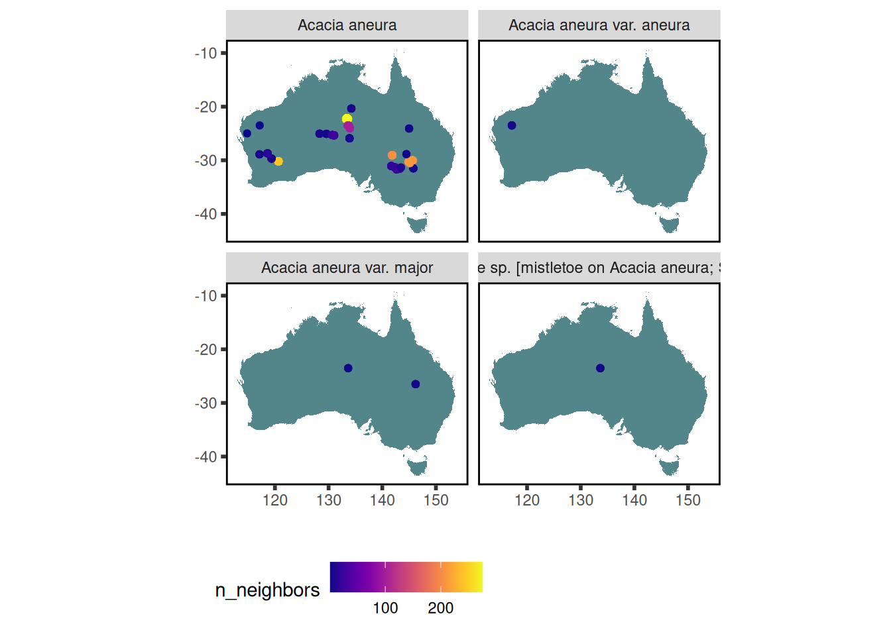
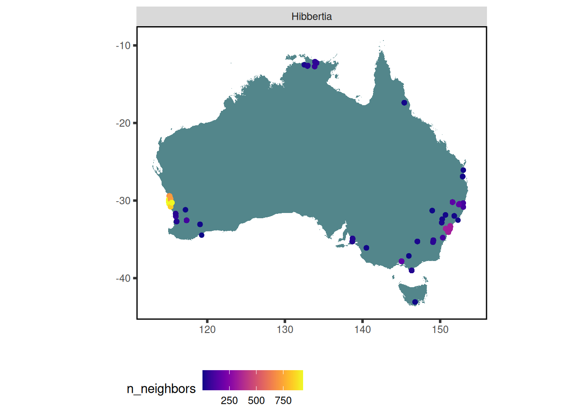
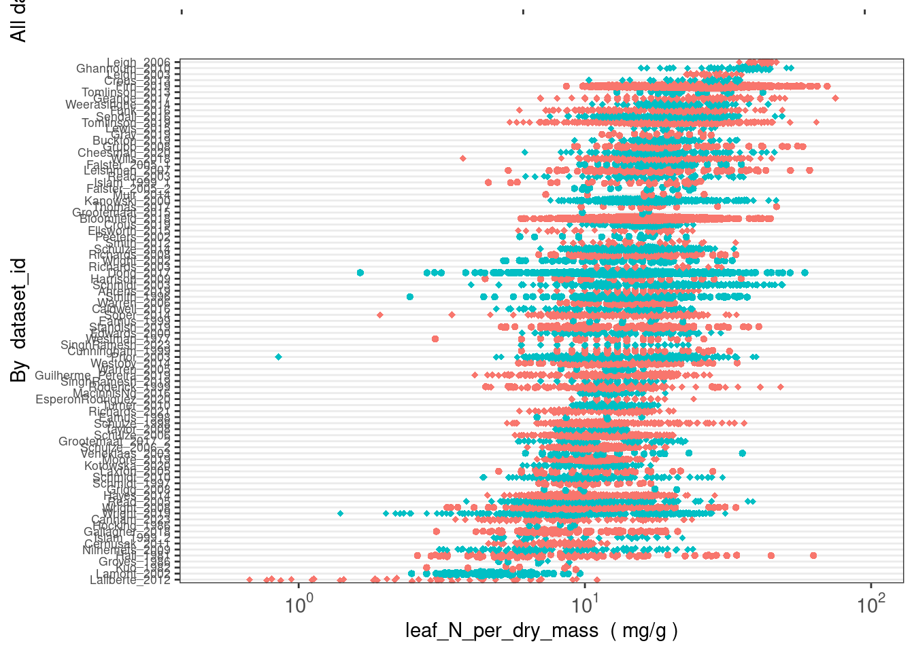
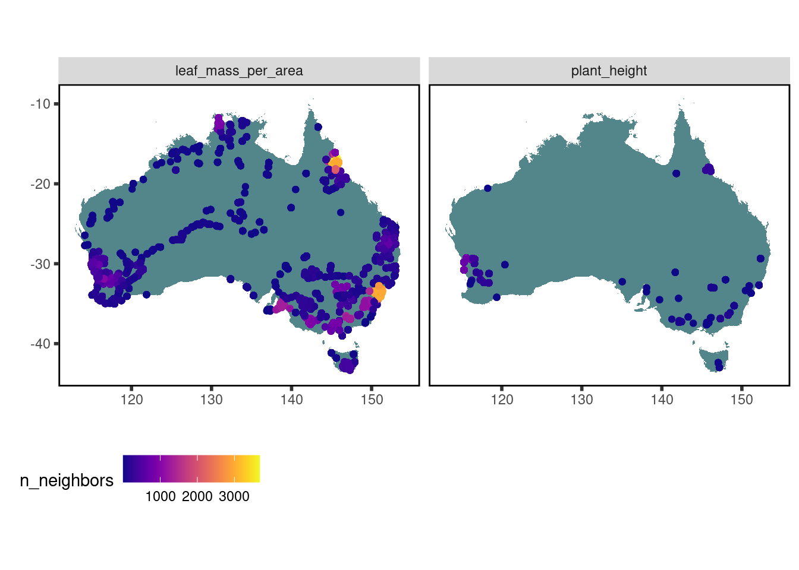
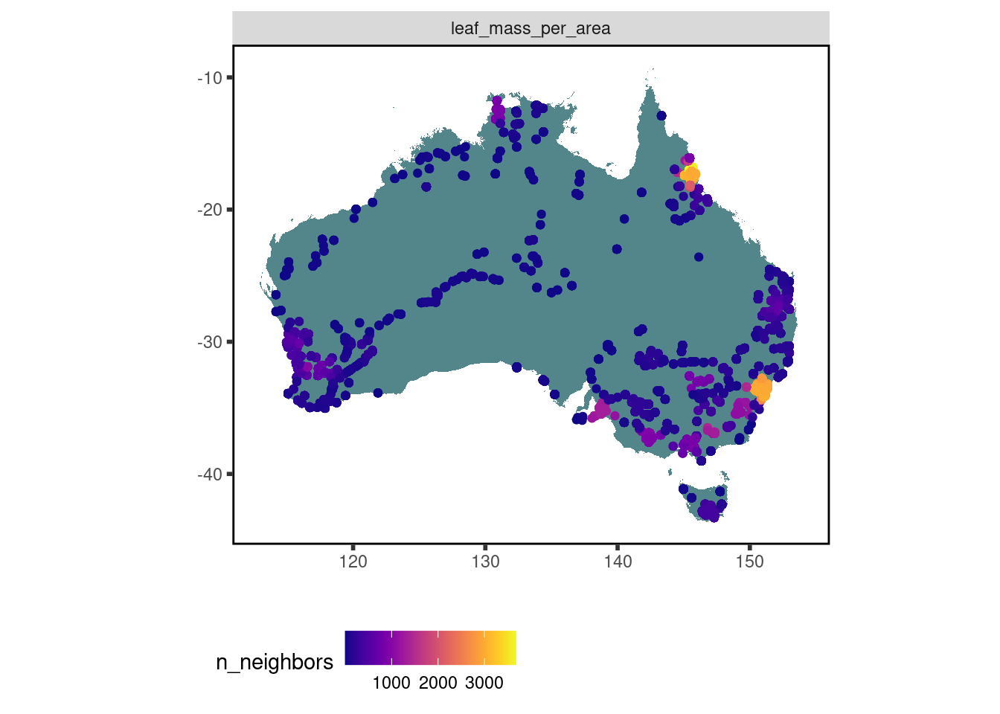
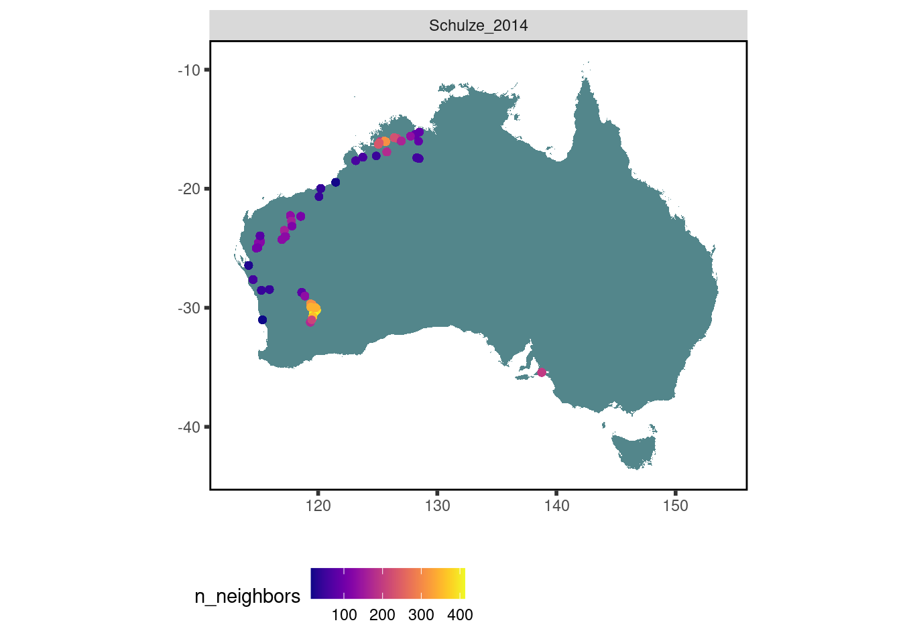

library(readr)
library(tidyr)
library(dplyr)
library(stringr)
#remotes::install_github("traitecoevo/austraits", quick=TRUE)
library(austraits) # functions for exploring a traits.build database, available at Github repo
library(traits.build) # additional functions for exploring a traits.build database, available at Github repo
source("data/extra_functions.R")29 AusTraits tutorial
29.1 Introduction
With more than 1.8 million data records, AusTraits is Australia’s largest plant trait database, created using the {traits.build} R package
This tutorial introduces:
additional examples of analyses using the database
To access more information about traits.build see traits.build-book
Or you can visit the Github repositories for individual packages/data repos:
the database structure,
traits.buildthe database contents,
austraits.buildan R package for exploring and wrangling the data,
austraits
29.2 Download AusTraits data
Before you begin, download and source essential packages and functions.
Then download (or build) the latest AusTraits data, by one of the methods described here.
This tutorial uses the most recent AusTraits release, version 5.0.0
most_recent <- austraits::get_versions()|> dplyr::pull("doi") |> dplyr::first()
most_recent[1] "10.5281/zenodo.10156222"austraits <- austraits::load_austraits(doi = most_recent)Downloading AusTraits to 'data/austraits'Loading data from 'data/austraits/austraits-5.0.0.rds'29.3 A first look at data
If you’re not familiar with AusTraits, you may want to begin by exploring the breadth and depth of data within the database. The database can be explored by trait name, species, or genus using either austraits functions or dplyr functions.
How many taxa have leaf_N_per_dry_mass data in AusTraits?
austraits$traits %>%
dplyr::filter(trait_name == "leaf_N_per_dry_mass") %>%
dplyr::distinct(taxon_name) %>% nrow()[1] 2230How are these data distributed across datasets?
austraits::plot_trait_distribution_beeswarm(austraits, "leaf_N_per_dry_mass", y_axis_category = "dataset_id")Orientation inferred to be along y-axis; override with
`position_quasirandom(orientation = 'x')`
How much data exist for other nitrogen traits?
austraits::lookup_trait(austraits, "_N_") -> N_traits
austraits$traits %>%
dplyr::filter(trait_name %in% N_traits) %>%
dplyr::distinct(taxon_name, trait_name) %>%
dplyr::group_by(trait_name) %>%
dplyr::mutate(n_taxa = length(trait_name)) %>%
dplyr::ungroup() %>%
dplyr::distinct(trait_name, n_taxa)# A tibble: 16 × 2
trait_name n_taxa
<chr> <int>
1 leaf_N_per_dry_mass 2230
2 leaf_N_per_area 708
3 wood_N_per_dry_mass 69
4 leaf_senesced_N_per_dry_mass 81
5 bark_N_per_dry_mass 49
6 fruit_N_per_dry_mass 22
7 seed_N_per_seed_dry_mass 42
8 stem_N_per_dry_mass 28
9 wood_dead_N_per_dry_mass 7
10 flower_N_per_dry_mass 2
11 leaf_N_resorption 14
12 leaf_cell_wall_N_per_cell_wall_dry_mass 22
13 leaf_cell_wall_N_per_leaf_N 22
14 root_N_per_dry_mass 22
15 leaf_rubisco_N_per_total_leaf_N 29
16 leaf_thylakoid_N_per_total_leaf_N 29How many “hydraulic” traits are in AusTraits? How much data exist for these traits?
austraits::lookup_trait(austraits, "hydraulic") -> hydraulic_traits
austraits$traits %>%
dplyr::filter(trait_name %in% hydraulic_traits) %>%
dplyr::distinct(taxon_name, trait_name) %>%
dplyr::group_by(trait_name) %>%
dplyr::mutate(n_taxa = length(trait_name)) %>%
dplyr::ungroup() %>%
dplyr::distinct(trait_name, n_taxa)# A tibble: 10 × 2
trait_name n_taxa
<chr> <int>
1 sapwood_specific_hydraulic_conductivity_theoretical 164
2 stem_vessel_diameter_hydraulic 264
3 leaf_hydraulic_vulnerability 20
4 leaf_specific_hydraulic_conductance 79
5 leaf_specific_hydraulic_conductivity 168
6 sapwood_specific_hydraulic_conductivity 179
7 stem_specific_hydraulic_conductivity 14
8 stem_hydraulic_conductivity 51
9 hydraulic_safety_margin_50 31
10 hydraulic_safety_margin_88 26Where have trait data for Acacia aneura been collected?
data <-
austraits %>%
austraits::extract_taxa(taxon_name = "Acacia aneura") %>%
austraits::join_locations()
data$traits %>% austraits::plot_locations("taxon_name") # 1 taxon, so 1 plot
Where have data for Hibbertia species been collected?
data <-
austraits %>%
austraits::extract_taxa(genus = "Hibbertia") %>%
austraits::join_locations() %>%
austraits::join_taxonomy()
data$traits %>% austraits::plot_locations("genus")
29.4 The database structure
The {traits.build} R package is the workflow that builds AusTraits from its component datasets.
The database is output as a collection of relational tables, described in detail here.
The data object austraits includes both the relational data tables and additional tables documenting database metadata and the traits dictionary referenced for trait concepts.
names(austraits) [1] "traits" "locations" "contexts"
[4] "methods" "excluded_data" "taxonomic_updates"
[7] "taxa" "contributors" "sources"
[10] "definitions" "schema" "metadata"
[13] "build_info" Traits table
The core AusTraits table is the traits table. It is in “long” format, with each row documenting a single trait measurement.
austraits$traits %>% dplyr::slice(1:20)# A tibble: 20 × 26
dataset_id taxon_name observation_id trait_name value unit entity_type
<chr> <chr> <chr> <chr> <chr> <chr> <chr>
1 ABRS_1981 Acanthocarpus c… 0001 leaf_comp… simp… <NA> species
2 ABRS_1981 Acanthocarpus c… 0001 leaf_leng… 3 mm species
3 ABRS_1981 Acanthocarpus c… 0001 leaf_leng… 15 mm species
4 ABRS_1981 Acanthocarpus c… 0001 seed_heig… 3 mm species
5 ABRS_1981 Acanthocarpus c… 0001 seed_leng… 3 mm species
6 ABRS_1981 Acanthocarpus c… 0001 seed_width 3 mm species
7 ABRS_1981 Acanthocarpus h… 0002 leaf_comp… simp… <NA> species
8 ABRS_1981 Acanthocarpus h… 0002 leaf_leng… 4 mm species
9 ABRS_1981 Acanthocarpus h… 0002 leaf_leng… 12 mm species
10 ABRS_1981 Acanthocarpus h… 0002 seed_leng… 4 mm species
11 ABRS_1981 Acanthocarpus p… 0003 leaf_comp… simp… <NA> species
12 ABRS_1981 Acanthocarpus p… 0003 leaf_leng… 3 mm species
13 ABRS_1981 Acanthocarpus p… 0003 seed_leng… 3.5 mm species
14 ABRS_1981 Acanthocarpus p… 0003 seed_leng… 4 mm species
15 ABRS_1981 Acanthocarpus p… 0004 leaf_comp… simp… <NA> species
16 ABRS_1981 Acanthocarpus p… 0004 leaf_leng… 20 mm species
17 ABRS_1981 Acanthocarpus p… 0004 leaf_leng… 70 mm species
18 ABRS_1981 Acanthocarpus p… 0004 seed_leng… 4 mm species
19 ABRS_1981 Acanthocarpus p… 0004 seed_leng… 5 mm species
20 ABRS_1981 Acanthocarpus r… 0005 leaf_comp… simp… <NA> species
# ℹ 19 more variables: value_type <chr>, basis_of_value <chr>,
# replicates <chr>, basis_of_record <chr>, life_stage <chr>,
# population_id <chr>, individual_id <chr>, repeat_measurements_id <chr>,
# temporal_context_id <chr>, source_id <chr>, location_id <chr>,
# entity_context_id <chr>, plot_context_id <chr>, treatment_context_id <chr>,
# collection_date <chr>, measurement_remarks <chr>, method_id <chr>,
# method_context_id <chr>, original_name <chr>The columns include:
- core columns
- dataset_id
- taxon_name
- trait_name
- value (trait value)
- entity metadata
- entity_type
- life_stage
- entity_type
- value metadata
- value_type
- unit
- basis_of_value
- replicate
- basis_of_record
- value_type
- additional metadata
- collection_date
- measurement_remarks
- identifiers for specific observations, individuals, etc.
- observation_id
- individual_id
- population_id
- repeat_measurements_id
- observation_id
- identifiers that provide links to ancillary tables with additional metadata
- location_id
- treatment_context_id
- plot_context_id
- entity_context_id
- temporal_context_id
- method_context_id
- method_id
- source_id
- location_id
Ancillary data tables
The remaining metadata accompanying each trait record is recorded across multiple relational tables.
These include:
- austraits$locations
- austraits$contexts
- austraits$methods
- austraits$taxa
- austraits$taxonomic_updates
- austraits$contributors
Like the core traits table, each is in ‘long’ format.
The tables locations, contexts, methods and taxa include metadata that links seamlessly to individual rows within traits.
As such, you can use the various {dplyr} join functions to join together the relational tables into a single (much) wider table. Some {austraits} package functions also join key columns to the traits table.
| table | metadata in table | columns that link to austraits$traits |
|---|---|---|
| locations | location name, location properties, latitude, longitude | dataset_id, location_id |
| contexts | context name, context category (method context, temporal, entity context, plot, treatment), context property | dataset_id, link_id (identifier to link to: method_context_id, temporal_id, entity_context_id, plot_id, treatment_id), link_vals (identifier value to link to) |
| methods | dataset description, dataset sampling strategy, trait collection method, data collectors, data curators, dataset citation, source_id & citation | dataset_id, trait_name, method_id |
| taxa | genus, family, scientific name, APC/APNI taxon concept/taxon name identifiers | taxon_name |
| taxonomic_updates | original name (name submitted), aligned name (typos removed; standardised syntax), identifiers for aligned name | dataset_id, taxon_name, original_name |
| contributors | people who contributed data, including their ORCIDs, affiliations, roles | dataset_id |
29.5 Exploring AusTraits
With 1813897 rows of trait values in the main traits table, knowing how to explore the contents is essential.
The R package {austraits} offers a collection of functions to explore and wrangle AusTraits data - or indeed any data using the traits.build format.
Function categories include:
summarise and lookup functions: These functions offer summaries by taxon name or trait, summarising taxa per trait (or other variable), datasets per trait, and observations per trait.
filtering functions: These functions begin with the word
extractand filter all of the relational tables simultaneously.join functions: These functions allow columns from the relational tables to be joined to the core traits table.
pivot functions: These functions allow the traits table to be pivoted between long and wide formats.
plotting functions: These functions offer a means to rapidly visualise AusTraits data, either plotting collection locations on a map of Australia or plotting trait values by dataset.
austraits.R function reference
Reference guide to: austraits functions
(There is also a standalone austraits introduction, which repeats some of the same material covered here.)
Summarising data: data coverage
There are three functions for summarising AusTraits data:
- summarise_austraits()
- summarise_trait_means()
- lookup_trait()
Use the function summarise_austraits to output summaries of total records, datasets with records, and taxa with records across families, genera or traits:
austraits::summarise_austraits(austraits, "trait_name") %>% dplyr::slice(100:130) trait_name n_records n_dataset n_taxa percent_total
flower_style_differentiation 1656 2 1547 9.13e-04
flower_style_fusion 319 2 267 1.76e-04
flowering_cues 278 1 244 1.53e-04
flowering_time 32966 35 18215 1.82e-02
fruit_Ca_per_dry_mass 27 4 21 1.49e-05
fruit_K_per_dry_mass 27 4 21 1.49e-05
fruit_Mg_per_dry_mass 27 4 21 1.49e-05
fruit_N_per_dry_mass 31 5 22 1.71e-05
fruit_P_per_dry_mass 29 5 23 1.60e-05
fruit_S_per_dry_mass 27 4 21 1.49e-05
fruit_colour 6644 6 4745 3.66e-03
fruit_dehiscence 41671 17 24297 2.30e-02
fruit_dry_mass 495 7 138 2.73e-04
fruit_fleshiness 32575 15 21421 1.80e-02
fruit_height 8128 7 3316 4.48e-03
fruit_length 36965 16 12748 2.04e-02
fruit_type 56734 18 25352 3.13e-02
fruit_wall_thickness 329 1 16 1.81e-04
fruit_width 23652 15 8273 1.30e-02
fruiting_time 3770 7 3470 2.08e-03
genome_size 1080 3 976 5.95e-04
huber_value 1494 19 358 8.24e-04
hydraulic_safety_margin_50 46 2 31 2.54e-05
hydraulic_safety_margin_88 40 2 26 2.21e-05
integrated_plant_transpiration 202 3 32 1.11e-04
leaf_Al_per_dry_mass 968 7 234 5.34e-04
leaf_B_per_dry_mass 1140 10 352 6.28e-04
leaf_CN_ratio 1045 9 125 5.76e-04
leaf_C_per_dry_mass 4797 29 1098 2.64e-03
leaf_Ca_per_dry_mass 1886 20 509 1.04e-03
leaf_Cl_per_dry_mass 6 2 6 3.31e-06austraits::summarise_austraits(austraits, var = "family") %>% dplyr::slice(1:20) family n_records n_dataset n_taxa percent_total
Acanthaceae 3437 56 149 1.89e-03
Achariaceae 162 14 3 8.93e-05
Actinidiaceae 172 15 3 9.48e-05
Agapanthaceae 105 12 3 5.79e-05
Aizoaceae 4963 62 102 2.74e-03
Akaniaceae 116 16 1 6.40e-05
Alismataceae 853 30 20 4.70e-04
Alliaceae 565 18 18 3.12e-04
Alseuosmiaceae 318 13 3 1.75e-04
Alstroemeriaceae 173 14 2 9.54e-05
Amaranthaceae 10257 84 267 5.65e-03
Amaryllidaceae 1391 37 56 7.67e-04
Anacardiaceae 2192 64 26 1.21e-03
Anarthriaceae 805 32 20 4.44e-04
Annonaceae 4621 49 62 2.55e-03
Aphanopetalaceae 188 22 3 1.04e-04
Apiaceae 12372 93 195 6.82e-03
Apocynaceae 15859 110 238 8.74e-03
Apodanthaceae 79 11 4 4.36e-05
Aponogetonaceae 475 19 14 2.62e-04austraits::summarise_austraits(austraits, var = "genus") %>% dplyr::slice(1:20) genus n_records n_dataset n_taxa percent_total
(Dockrillia 3 2 1 1.65e-06
Abelia 16 4 1 8.82e-06
Abelmoschus 291 19 8 1.61e-04
Abildgaardia 80 7 2 4.41e-05
Abrodictyum 131 14 3 7.23e-05
Abroma 39 7 2 2.15e-05
Abrophyllum 191 19 3 1.05e-04
Abrotanella 191 18 4 1.05e-04
Abrus 219 26 3 1.21e-04
Abutilon 2089 52 54 1.15e-03
Acacia 111994 191 1558 6.18e-02
Acaciella 66 5 3 3.64e-05
Acaena 1205 44 14 6.65e-04
Acalypha 594 20 14 3.28e-04
Acanthocarpus 1030 22 9 5.68e-04
Acanthocereus 22 4 1 1.21e-05
Acanthocladium 60 13 1 3.31e-05
Acanthospermum 132 16 2 7.28e-05
Acanthus 198 18 4 1.09e-04
Acer 247 15 4 1.36e-04Since this function summarises the variable selected for ALL of AusTraits, you will want to first filter the data before summarising by “taxon_name” – or even “trait_name”.
Alternatively you can look up traits that contain a specific search term:
austraits::lookup_trait(austraits, "leaf") %>% length()[1] 213austraits::lookup_trait(austraits, "leaf")[1:30] [1] "leaf_compoundness"
[2] "leaf_length"
[3] "leaf_phenology"
[4] "leaf_width"
[5] "leaf_margin"
[6] "leaf_shape"
[7] "leaf_lamina_posture"
[8] "leaf_base_shape"
[9] "leaf_lobation"
[10] "leaf_phyllotaxis"
[11] "leaf_glaucousness"
[12] "leaf_arrangement"
[13] "leaf_margin_posture"
[14] "leaf_pendulousness"
[15] "leaf_N_per_dry_mass"
[16] "leaf_area"
[17] "leaf_delta13C"
[18] "leaf_mass_per_area"
[19] "leaf_photochemical_reflectance_index"
[20] "leaf_water_band_index"
[21] "leaf_dry_matter_content"
[22] "leaf_thickness"
[23] "leaf_water_use_efficiency_intrinsic"
[24] "leaf_hairs_adult_leaves"
[25] "leaf_hydraulic_vulnerability"
[26] "leaf_specific_hydraulic_conductance"
[27] "leaf_turgor_loss_point"
[28] "leaf_NP_ratio"
[29] "leaf_N_per_area"
[30] "leaf_P_per_area" austraits::lookup_trait(austraits, "_N_") # elemental contents use their symbol and are always in the middle of a trait name [1] "leaf_N_per_dry_mass"
[2] "leaf_N_per_area"
[3] "wood_N_per_dry_mass"
[4] "leaf_senesced_N_per_dry_mass"
[5] "bark_N_per_dry_mass"
[6] "fruit_N_per_dry_mass"
[7] "seed_N_per_seed_dry_mass"
[8] "stem_N_per_dry_mass"
[9] "wood_dead_N_per_dry_mass"
[10] "flower_N_per_dry_mass"
[11] "leaf_N_resorption"
[12] "leaf_cell_wall_N_per_cell_wall_dry_mass"
[13] "leaf_cell_wall_N_per_leaf_N"
[14] "root_N_per_dry_mass"
[15] "leaf_rubisco_N_per_total_leaf_N"
[16] "leaf_thylakoid_N_per_total_leaf_N" austraits::lookup_trait(austraits, "photo") [1] "plant_photosynthetic_organ"
[2] "leaf_photochemical_reflectance_index"
[3] "leaf_photosynthetic_nitrogen_use_efficiency_saturated"
[4] "leaf_photosynthetic_phosphorus_use_efficiency_saturated"
[5] "leaf_photosynthetic_rate_per_area_maximum"
[6] "leaf_photosynthetic_rate_per_area_saturated"
[7] "leaf_photosynthetic_rate_per_dry_mass_maximum"
[8] "leaf_photosynthetic_rate_per_dry_mass_saturated"
[9] "leaf_photosynthesis_Jmax_per_area_25C"
[10] "leaf_photosynthesis_Vcmax_per_area"
[11] "leaf_photosynthesis_Jmax_per_area"
[12] "leaf_photosynthetic_rate_per_area_ambient"
[13] "photosynthetic_pathway"
[14] "leaf_photosynthesis_Jmax_per_mass"
[15] "leaf_photosynthesis_Vcmax_per_mass"
[16] "leaf_photosynthetic_nitrogen_use_efficiency_maximum"
[17] "leaf_photosynthetic_phosphorus_use_efficiency_maximum"
[18] "leaf_photosynthesis_Jmax_over_Vcmax_25C"
[19] "leaf_photosynthesis_Vcmax_per_area_25C"
[20] "bark_photosynthetic_status" If you’d like to summarise similar metrics for a subset of data, it is best to write your own code to filter, then summarise based on specific variable values.
For instance, to just look at info for nitrogen-related traits:
austraits::lookup_trait(austraits, "_N_") -> N_traits
austraits$traits %>%
dplyr::filter(trait_name %in% N_traits) %>%
dplyr::distinct(taxon_name, trait_name) %>%
dplyr::group_by(trait_name) %>%
dplyr::mutate(n_taxa = length(trait_name)) %>%
dplyr::ungroup() %>%
dplyr::distinct(trait_name, n_taxa)# A tibble: 16 × 2
trait_name n_taxa
<chr> <int>
1 leaf_N_per_dry_mass 2230
2 leaf_N_per_area 708
3 wood_N_per_dry_mass 69
4 leaf_senesced_N_per_dry_mass 81
5 bark_N_per_dry_mass 49
6 fruit_N_per_dry_mass 22
7 seed_N_per_seed_dry_mass 42
8 stem_N_per_dry_mass 28
9 wood_dead_N_per_dry_mass 7
10 flower_N_per_dry_mass 2
11 leaf_N_resorption 14
12 leaf_cell_wall_N_per_cell_wall_dry_mass 22
13 leaf_cell_wall_N_per_leaf_N 22
14 root_N_per_dry_mass 22
15 leaf_rubisco_N_per_total_leaf_N 29
16 leaf_thylakoid_N_per_total_leaf_N 29Or look at how many datasets have each trait:
austraits::lookup_trait(austraits, "_N_") -> N_traits
austraits$traits %>%
dplyr::filter(trait_name %in% N_traits) %>%
dplyr::distinct(dataset_id, trait_name) %>%
dplyr::group_by(trait_name) %>%
dplyr::mutate(n_dataset = length(trait_name)) %>%
dplyr::ungroup() %>%
dplyr::distinct(trait_name, n_dataset)# A tibble: 16 × 2
trait_name n_dataset
<chr> <int>
1 leaf_N_per_dry_mass 87
2 leaf_N_per_area 30
3 wood_N_per_dry_mass 8
4 leaf_senesced_N_per_dry_mass 9
5 bark_N_per_dry_mass 5
6 fruit_N_per_dry_mass 5
7 seed_N_per_seed_dry_mass 6
8 stem_N_per_dry_mass 3
9 wood_dead_N_per_dry_mass 3
10 flower_N_per_dry_mass 2
11 leaf_N_resorption 1
12 leaf_cell_wall_N_per_cell_wall_dry_mass 1
13 leaf_cell_wall_N_per_leaf_N 1
14 root_N_per_dry_mass 4
15 leaf_rubisco_N_per_total_leaf_N 1
16 leaf_thylakoid_N_per_total_leaf_N 1Filtering data
There are a trio of austraits.R functions to filter data by trait_name, taxon_name or dataset_id:
leaf_mass_per_area_values <-
austraits %>%
austraits::extract_trait(trait_names = c("leaf_mass_per_area"))
Westoby_2014_values <-
austraits %>%
austraits::extract_dataset("Westoby_2014")
Eucalyptus_values <-
austraits %>%
austraits::extract_taxa(genus = "Eucalyptus")
Banksia_serrata_values <-
austraits %>%
austraits::extract_taxa(genus = "Banksia serrata")The advantage of the {austraits} package functions over dplyr::filter() is that they simultaneously subset both the core traits table and all the ancillary data tables.
However, there are many columns within the traits tables that you cannot (currently) filter by using {austraits} functions.
If you wish to also subset data based on fields such as basis_of_record or life_stage you need to use dplyr::filter(). This allows you to pipe together multiple filtering calls, but only filters the traits table.
my_data <-
austraits$traits %>%
dplyr::filter(stringr::str_detect(taxon_name, "Eucalyptus")) %>%
dplyr::filter(trait_name %in% c("leaf_mass_per_area", "leaf_length", "leaf_thickness")) %>%
dplyr::filter(basis_of_record == "field")
my_data %>% nrow()[1] 5375my_data %>% dplyr::slice(1:10)# A tibble: 10 × 26
dataset_id taxon_name observation_id trait_name value unit entity_type
<chr> <chr> <chr> <chr> <chr> <chr> <chr>
1 Atkinson_2020_2 Eucalyptus… 35 leaf_mass… 189.… g/m2 individual
2 Atkinson_2020_2 Eucalyptus… 36 leaf_mass… 172.… g/m2 individual
3 Atkinson_2020_2 Eucalyptus… 37 leaf_mass… 138.… g/m2 individual
4 Atkinson_2020_2 Eucalyptus… 38 leaf_mass… 141.… g/m2 individual
5 Atkinson_2020_2 Eucalyptus… 39 leaf_mass… 172.… g/m2 individual
6 Atkinson_2020_2 Eucalyptus… 40 leaf_mass… 171.… g/m2 individual
7 Atkinson_2020_2 Eucalyptus… 41 leaf_mass… 168.… g/m2 individual
8 Atkinson_2020_2 Eucalyptus… 42 leaf_mass… 210.… g/m2 individual
9 Atkinson_2020_2 Eucalyptus… 43 leaf_mass… 178.… g/m2 individual
10 Atkinson_2020_2 Eucalyptus… 44 leaf_mass… 226.… g/m2 individual
# ℹ 19 more variables: value_type <chr>, basis_of_value <chr>,
# replicates <chr>, basis_of_record <chr>, life_stage <chr>,
# population_id <chr>, individual_id <chr>, repeat_measurements_id <chr>,
# temporal_context_id <chr>, source_id <chr>, location_id <chr>,
# entity_context_id <chr>, plot_context_id <chr>, treatment_context_id <chr>,
# collection_date <chr>, measurement_remarks <chr>, method_id <chr>,
# method_context_id <chr>, original_name <chr>Joining relational tables
For many research purposes you will want to join metadata from one of the relational tables to the core traits table. There are a series of {austraits} functions that facilitate this - or you can use dplyr::left_join() to join tables.
Joining locations
The locations table includes information on all location properties measured, including the actual location (latitude/longitude), climatic data, soil properties, fire history, vegetation history, and geologic history.
To just add location name, latitude, and longitude:
traits_with_lat_long <-
austraits %>% austraits::join_locations()
traits_with_lat_long$traits %>%
dplyr::select(dataset_id, taxon_name, trait_name, value, location_name, location_id, `latitude (deg)`, `longitude (deg)`) %>%
dplyr::filter(!is.na(`latitude (deg)`)) %>%
dplyr::slice(1:20)# A tibble: 20 × 8
dataset_id taxon_name trait_name value location_name location_id
<chr> <chr> <chr> <chr> <chr> <chr>
1 Ahrens_2019 Corymbia calophylla leaf_N_per_d… 9 BOO 01
2 Ahrens_2019 Corymbia calophylla leaf_area 1288… BOO 01
3 Ahrens_2019 Corymbia calophylla leaf_delta13C -27.… BOO 01
4 Ahrens_2019 Corymbia calophylla leaf_mass_pe… 185.… BOO 01
5 Ahrens_2019 Corymbia calophylla leaf_photoch… 0.02… BOO 01
6 Ahrens_2019 Corymbia calophylla leaf_water_b… 1.06… BOO 01
7 Ahrens_2019 Corymbia calophylla modified_NDVI 0.71… BOO 01
8 Ahrens_2019 Corymbia calophylla wood_density 0.60… BOO 01
9 Ahrens_2019 Corymbia calophylla leaf_N_per_d… 16 BOO 01
10 Ahrens_2019 Corymbia calophylla leaf_area 9647… BOO 01
11 Ahrens_2019 Corymbia calophylla leaf_delta13C -27.… BOO 01
12 Ahrens_2019 Corymbia calophylla leaf_mass_pe… 138.… BOO 01
13 Ahrens_2019 Corymbia calophylla leaf_photoch… 0.03… BOO 01
14 Ahrens_2019 Corymbia calophylla leaf_water_b… 1.05… BOO 01
15 Ahrens_2019 Corymbia calophylla modified_NDVI 0.77… BOO 01
16 Ahrens_2019 Corymbia calophylla wood_density 0.48… BOO 01
17 Ahrens_2019 Corymbia calophylla leaf_N_per_d… 10 BOO 01
18 Ahrens_2019 Corymbia calophylla leaf_area 1250… BOO 01
19 Ahrens_2019 Corymbia calophylla leaf_delta13C -27.… BOO 01
20 Ahrens_2019 Corymbia calophylla leaf_mass_pe… 169.… BOO 01
# ℹ 2 more variables: `latitude (deg)` <chr>, `longitude (deg)` <chr>However, the {austraits} function join_locations only joins latitude and longitude data from the locations tables.
To join all location properties you need to use tidyr::pivot_wider and dplyr::left_join, using the code in steps (2) and (3) below.
Moreover, as there are currently 202 location properties, you will want to first filter the locations properties, to tailor your join request to the exact information relevant to your study.
- Select specific location properties to merge onto the traits table:
austraits$locations %>%
dplyr::distinct(location_property)# A tibble: 202 × 1
location_property
<chr>
1 latitude (deg)
2 longitude (deg)
3 aridity index (MAP/PET)
4 precipitation, MAP (mm)
5 temperature, max (C)
6 locality
7 recorded by
8 description
9 notes
10 soil type
# ℹ 192 more rowslocations <-
austraits$locations %>%
dplyr::filter(location_property %in% c("latitude (deg)", "longitude (deg)", "description", "aridity index (MAP/PET)", "soil type", "fire history"))- The data from the locations table must be pivoted into a wide-format table to join to the traits table.
locations <-
locations %>%
tidyr::pivot_wider(names_from = location_property, values_from = value)- You can now now join this table of location properties onto the traits table.
traits_with_locations <-
austraits$traits %>%
dplyr::left_join(locations, by = c("dataset_id", "location_id"))Joining contexts
The context tables documents additional context properties/ancillary data may be useful for interpreting trait values. Context properties are divided into 5 categories, treatment context, plot context, entity context, temporal context, and method context.
| context category | description |
|---|---|
| treatment context | Context property that is an experimental manipulation that might affect the trait values measured on an individual, population or species-level entity. |
| plot context | Context property that is a feature of a plot (subset of a location) that might affect the trait values measured on an individual, population or species-level entity. |
| entity context | Context property that is information about an organismal entity (individual, population or taxon) that does not comprise a trait-centered observation but might affect the trait values measured on the entity. |
| temporal context | Context property that is a feature of a “point in time” that might affect the trait values measured on an individual, population or species-level entity. |
| method context | Context property that records specific information about a measurement method that is modified between measurements. |
Joining the context table to the traits table is best done using the {austraits} function, as there are 5 identifiers in the traits table (entity_context_id, method_context_id, temporal_context_id, plot_context_id and treatment_context_id) that link to two columns in the contexts table (link_vals and link_id).
traits_with_contexts <-
austraits %>% austraits::join_contexts()
traits_with_contexts$traits %>%
dplyr::select(-dplyr::all_of(c("temporal_context_id", "method_context_id", "treatment_context_id", "entity_context_id", "plot_context_id")))# A tibble: 1,813,897 × 103
dataset_id taxon_name observation_id trait_name value unit entity_type
<chr> <chr> <chr> <chr> <chr> <chr> <chr>
1 ABRS_1981 Acanthocarpus c… 0001 leaf_comp… simp… <NA> species
2 ABRS_1981 Acanthocarpus c… 0001 leaf_leng… 3 mm species
3 ABRS_1981 Acanthocarpus c… 0001 leaf_leng… 15 mm species
4 ABRS_1981 Acanthocarpus c… 0001 seed_heig… 3 mm species
5 ABRS_1981 Acanthocarpus c… 0001 seed_leng… 3 mm species
6 ABRS_1981 Acanthocarpus c… 0001 seed_width 3 mm species
7 ABRS_1981 Acanthocarpus h… 0002 leaf_comp… simp… <NA> species
8 ABRS_1981 Acanthocarpus h… 0002 leaf_leng… 4 mm species
9 ABRS_1981 Acanthocarpus h… 0002 leaf_leng… 12 mm species
10 ABRS_1981 Acanthocarpus h… 0002 seed_leng… 4 mm species
# ℹ 1,813,887 more rows
# ℹ 96 more variables: value_type <chr>, basis_of_value <chr>,
# replicates <chr>, basis_of_record <chr>, life_stage <chr>,
# population_id <chr>, individual_id <chr>, repeat_measurements_id <chr>,
# source_id <chr>, location_id <chr>, collection_date <chr>,
# measurement_remarks <chr>, method_id <chr>, original_name <chr>,
# `trait scoring method` <chr>, entity_measured <chr>, …This function adds columns to the traits table for all context properties. You may want to instead include fewer contexts.
austraits$contexts %>%
dplyr::distinct(context_property, category)# A tibble: 83 × 2
context_property category
<chr> <chr>
1 trait scoring method method_context
2 entity_measured method_context
3 replicate observations temporal_context
4 sampling season temporal_context
5 measurement CO2 method_context
6 seed provenance treatment_context
7 measurement irradiance method_context
8 repeat observations temporal_context
9 habitat flammability plot_context
10 time to flowering type entity_context
# ℹ 73 more rowsSelect all austraits$traits columns (26 currently) together with the context properties you want to keep.
traits_with_contexts$traits %>%
dplyr::select(1:ncol(austraits$traits), c("sampling season", "plant sex", "leaf surface", "leaf age", "fire intensity", "slope position", "fire season", "drought treatment", "temperature treatment"))# A tibble: 1,813,897 × 35
dataset_id taxon_name observation_id trait_name value unit entity_type
<chr> <chr> <chr> <chr> <chr> <chr> <chr>
1 ABRS_1981 Acanthocarpus c… 0001 leaf_comp… simp… <NA> species
2 ABRS_1981 Acanthocarpus c… 0001 leaf_leng… 3 mm species
3 ABRS_1981 Acanthocarpus c… 0001 leaf_leng… 15 mm species
4 ABRS_1981 Acanthocarpus c… 0001 seed_heig… 3 mm species
5 ABRS_1981 Acanthocarpus c… 0001 seed_leng… 3 mm species
6 ABRS_1981 Acanthocarpus c… 0001 seed_width 3 mm species
7 ABRS_1981 Acanthocarpus h… 0002 leaf_comp… simp… <NA> species
8 ABRS_1981 Acanthocarpus h… 0002 leaf_leng… 4 mm species
9 ABRS_1981 Acanthocarpus h… 0002 leaf_leng… 12 mm species
10 ABRS_1981 Acanthocarpus h… 0002 seed_leng… 4 mm species
# ℹ 1,813,887 more rows
# ℹ 28 more variables: value_type <chr>, basis_of_value <chr>,
# replicates <chr>, basis_of_record <chr>, life_stage <chr>,
# population_id <chr>, individual_id <chr>, repeat_measurements_id <chr>,
# temporal_context_id <chr>, source_id <chr>, location_id <chr>,
# entity_context_id <chr>, plot_context_id <chr>, treatment_context_id <chr>,
# collection_date <chr>, measurement_remarks <chr>, method_id <chr>, …Joining methods
The methods table documents a selection of metadata recorded about the entire dataset and methods used for individual trait measurements. There is a single row of data per dataset_id x trait_name x method_id combination. Method_id is used to distinguish between instances where a single trait is measured twice using two separate protocols and is separate to method_context_id which documents specific components of a methods that are modified between measurements.
The {austraits} function offers a function to just add trait methods to the traits table:
traits_with_methods <-
austraits %>% austraits::join_methods()
traits_with_methods$traits# A tibble: 1,813,897 × 27
dataset_id taxon_name observation_id trait_name value unit entity_type
<chr> <chr> <chr> <chr> <chr> <chr> <chr>
1 ABRS_1981 Acanthocarpus c… 0001 leaf_comp… simp… <NA> species
2 ABRS_1981 Acanthocarpus c… 0001 leaf_leng… 3 mm species
3 ABRS_1981 Acanthocarpus c… 0001 leaf_leng… 15 mm species
4 ABRS_1981 Acanthocarpus c… 0001 seed_heig… 3 mm species
5 ABRS_1981 Acanthocarpus c… 0001 seed_leng… 3 mm species
6 ABRS_1981 Acanthocarpus c… 0001 seed_width 3 mm species
7 ABRS_1981 Acanthocarpus h… 0002 leaf_comp… simp… <NA> species
8 ABRS_1981 Acanthocarpus h… 0002 leaf_leng… 4 mm species
9 ABRS_1981 Acanthocarpus h… 0002 leaf_leng… 12 mm species
10 ABRS_1981 Acanthocarpus h… 0002 seed_leng… 4 mm species
# ℹ 1,813,887 more rows
# ℹ 20 more variables: value_type <chr>, basis_of_value <chr>,
# replicates <chr>, basis_of_record <chr>, life_stage <chr>,
# population_id <chr>, individual_id <chr>, repeat_measurements_id <chr>,
# temporal_context_id <chr>, source_id <chr>, location_id <chr>,
# entity_context_id <chr>, plot_context_id <chr>, treatment_context_id <chr>,
# collection_date <chr>, measurement_remarks <chr>, method_id <chr>, …To add all information within the methods table:
traits_with_all_methods <-
austraits$traits %>%
dplyr::left_join(austraits$methods,
by = c("dataset_id", "trait_name", "method_id"))As there are quite a few columns in the method table with lengthy text fields, it is worth first viewing the methods table and confirming you want information like sampling_strategy merged into the traits table.
Check the schema file embedded within AusTraits to see what information is documented in each column:
austraits$schema$austraits$elements$methods$elements %>%
traits.build::util_list_to_df1()# A tibble: 15 × 2
key value
<chr> <chr>
1 dataset_id Primary identifier for each study contribut…
2 trait_name Name of the trait sampled. Allowable values…
3 methods A textual description of the methods used t…
4 method_id A unique integer identifier to distinguish …
5 description A 1-2 sentence description of the purpose o…
6 sampling_strategy A written description of how study location…
7 source_primary_key Citation key for the primary source in `sou…
8 source_primary_citation Citation for the primary source. This detai…
9 source_secondary_key Citation key for the secondary source in `s…
10 source_secondary_citation Citations for the secondary source. This de…
11 source_original_dataset_key Citation key for the original dataset_id in…
12 source_original_dataset_citation Citations for the original dataset_id in so…
13 data_collectors The person (people) leading data collection…
14 assistants Names of additional people who played a mor…
15 dataset_curators Names of AusTraits team member(s) who conta…Then just join the columns of interest:
traits_with_all_methods <-
austraits$traits %>%
dplyr::left_join(austraits$methods %>%
dplyr::select("dataset_id", "trait_name", "methods", "method_id", "description", "source_primary_citation", "data_collectors"),
by = c("dataset_id", "trait_name", "method_id"))Joining taxa
The taxon table documents a collection of names and identifiers for each taxon. Within AusTraits names submitted as identifiers within a dataset might be resolved to species, an infraspecific taxon, or sometimes just to genus- or family-level resolution; this information is recorded as the taxon_rank. The taxon_rank determines which information is filled in in the taxon table.
The {austraits} function makes it possible to quickly merge in family, genus, taxon_rank and establishment_means:
austraits_with_taxa <-
austraits %>% austraits::join_taxonomy()
austraits_with_taxa$traits# A tibble: 1,813,897 × 30
dataset_id taxon_name observation_id trait_name value unit entity_type
<chr> <chr> <chr> <chr> <chr> <chr> <chr>
1 ABRS_1981 Acanthocarpus c… 0001 leaf_comp… simp… <NA> species
2 ABRS_1981 Acanthocarpus c… 0001 leaf_leng… 3 mm species
3 ABRS_1981 Acanthocarpus c… 0001 leaf_leng… 15 mm species
4 ABRS_1981 Acanthocarpus c… 0001 seed_heig… 3 mm species
5 ABRS_1981 Acanthocarpus c… 0001 seed_leng… 3 mm species
6 ABRS_1981 Acanthocarpus c… 0001 seed_width 3 mm species
7 ABRS_1981 Acanthocarpus h… 0002 leaf_comp… simp… <NA> species
8 ABRS_1981 Acanthocarpus h… 0002 leaf_leng… 4 mm species
9 ABRS_1981 Acanthocarpus h… 0002 leaf_leng… 12 mm species
10 ABRS_1981 Acanthocarpus h… 0002 seed_leng… 4 mm species
# ℹ 1,813,887 more rows
# ℹ 23 more variables: value_type <chr>, basis_of_value <chr>,
# replicates <chr>, basis_of_record <chr>, life_stage <chr>,
# population_id <chr>, individual_id <chr>, repeat_measurements_id <chr>,
# temporal_context_id <chr>, source_id <chr>, location_id <chr>,
# entity_context_id <chr>, plot_context_id <chr>, treatment_context_id <chr>,
# collection_date <chr>, measurement_remarks <chr>, method_id <chr>, …To add all columns from austraits$taxa:
austraits_with_taxa <-
austraits$traits %>%
dplyr::left_join(austraits$taxa)29.6 Summarising data: trait means, modes, etc.
If you’ve sourced the file extra_functions.R, there are a few functions that allow you to summarise trait values.
Categorical traits
For instance, categorical_summary indicates how many times a specific trait value is reported for a given taxa (across all datasets):
cat_summary <- categorical_summary(austraits, "resprouting_capacity")
cat_summary# A tibble: 12,817 × 3
taxon_name trait_name value_summary
<chr> <chr> <chr>
1 Abelmoschus ficulneus resprouting_capacity fire_killed (4)
2 Abelmoschus manihot resprouting_capacity fire_killed (3)
3 Abelmoschus moschatus resprouting_capacity resprouts (1)
4 Abelmoschus moschatus subsp. tuberosus resprouting_capacity resprouts (3)
5 Abrodictyum caudatum resprouting_capacity fire_killed (2)
6 Abrodictyum obscurum resprouting_capacity fire_killed (2)
7 Abrotanella forsteroides resprouting_capacity resprouts (1)
8 Abrotanella nivigena resprouting_capacity resprouts (1)
9 Abrotanella sp. [White_2020] resprouting_capacity resprouts (1)
10 Abrus precatorius resprouting_capacity resprouts (1)
# ℹ 12,807 more rowsAlternatively, create a wider matrix with possible trait values as columns:
categorical_summary_wider <-
categorical_summary_by_value(austraits, "resprouting_capacity") %>%
tidyr::pivot_wider(names_from = value_tmp, values_from = replicates)
categorical_summary_wider# A tibble: 12,817 × 5
taxon_name trait_name fire_killed resprouts partial_resprouting
<chr> <chr> <dbl> <dbl> <dbl>
1 Abelmoschus ficulneus resprouti… 4 NA NA
2 Abelmoschus manihot resprouti… 3 NA NA
3 Abelmoschus moschatus resprouti… NA 1 NA
4 Abelmoschus moschatus s… resprouti… NA 3 NA
5 Abrodictyum caudatum resprouti… 2 NA NA
6 Abrodictyum obscurum resprouti… 2 NA NA
7 Abrotanella forsteroides resprouti… NA 1 NA
8 Abrotanella nivigena resprouti… NA 1 NA
9 Abrotanella sp. [White_… resprouti… NA 1 NA
10 Abrus precatorius resprouti… NA 1 NA
# ℹ 12,807 more rowsNumeric traits
We’re hesitant to write functions to summarise numeric traits, as this quickly requires statistical assumptions.
The datasets that comprise AusTraits were collected by different people, with different number of replicates, different entity types are reported - one dataset might include 20 measurements on individuals for a trait and another dataset might have submitted a single population-level mean derived from 5 measurements.
How do you take the mean of these trait values?
Do you want to include both data from experiments and plants growing under natural conditions? This information is recorded in the basis_of_record column.
The function austraits::summarise_trait_means() outputs location x taxon_name x dataset_id means, but is not (currently) appropriately updating/removing columns such as observation_id, individual_id, and replicates.
An alternative function we’re developing is:
weighted <- austraits_weighted_means(austraits, c("leaf_mass_per_area", "leaf_length"))
weighted# A tibble: 24,920 × 10
taxon_name trait_name mean min max median geom_mean all_replicates
<chr> <chr> <dbl> <dbl> <dbl> <dbl> <dbl> <dbl>
1 Abelia x grandi… leaf_leng… 35 20 50 NA 35 1
2 Abelmoschus fic… leaf_leng… 105 50 160 NA 105 1
3 Abelmoschus man… leaf_leng… 232. 150 380 NA 230. 2
4 Abelmoschus man… leaf_leng… 200 200 200 NA 200 1
5 Abelmoschus mos… leaf_leng… 103. 27 150 NA 97.6 3
6 Abelmoschus mos… leaf_leng… 150 150 150 NA 150 1
7 Abildgaardia ov… leaf_leng… 230 60 400 NA 230 1
8 Abrodictyum bra… leaf_leng… 143. 40 250 NA 137. 2
9 Abrodictyum cau… leaf_leng… 134. 35 200 NA 129. 4
10 Abrodictyum obs… leaf_leng… 203. 20 400 NA 175. 6
# ℹ 24,910 more rows
# ℹ 2 more variables: location_replicates <dbl>, flora_replicates <dbl>This function first groups values at the site level, then at the taxon level. For trait data sourced from floras, where trait values are documented as a minimum and maximum value, it simply takes the mean of these as an additional mean.
29.7 Plotting data
Plotting trait distributions
Another way to summarise AusTraits data by trait and determine if AusTraits offers sufficient data coverage for a trait of choice, is to plot the distribution of trait values in AusTraits.
As seen in A first look at data, the function austraits::plot_trait_distribution_beeswarm() plots trait data by dataset_id:
austraits$traits %>%
dplyr::filter(trait_name == "leaf_N_per_dry_mass") %>%
dplyr::distinct(taxon_name) %>% nrow()[1] 2230austraits::plot_trait_distribution_beeswarm(austraits, "leaf_N_per_dry_mass", y_axis_category = "dataset_id")Orientation inferred to be along y-axis; override with
`position_quasirandom(orientation = 'x')`
Plotting data distribution by location
To plot locations, you need to begin by merging on the latitude & longitude data from austraits$locations.
The plot_locations function plots the selected data, separating data into a series of plots based on the variable name selected. You can separate data based on the values of any column within the traits table - including basis_of_record, life_stage, value_type - or higher taxon categories (genus, family).
For instance, austraits::plot_locations("trait_name") will output a separate plot for each trait_name within the selected data.
A warning: austraits::plot_locations() WILL BE VERY SLOW if you request more than ~20 plots. For instance, do not attempt to generate plots for all traits simultaneously. Always first use extract/filter to just select a narrow range of traits, datasets, or taxa.
Plot locations by trait
data <-
austraits %>%
austraits::extract_trait(trait_names = c("leaf_mass_per_area")) %>%
austraits::join_locations()
data$traits %>%
dplyr::filter(!is.na(`latitude (deg)`)) %>% # reduce the size of the dataframe by only retaining values with geographic coordinates
austraits::plot_locations("trait_name")# or
data <-
austraits %>%
austraits::extract_trait(trait_names = c("leaf_mass_per_area", "plant_height")) %>%
austraits::join_locations()
data$traits %>%
dplyr::filter(!is.na(`latitude (deg)`)) %>%
austraits::plot_locations("trait_name")
Plot locations by study
data <-
austraits %>%
austraits::extract_dataset("Westoby_2014") %>%
austraits::join_locations()
data$traits %>%
dplyr::filter(!is.na(`latitude (deg)`)) %>%
austraits::plot_locations("dataset_id")
data <-
austraits %>%
austraits::extract_dataset("Schulze_2014") %>%
austraits::join_locations()
data$traits %>%
dplyr::filter(!is.na(`latitude (deg)`)) %>%
austraits::plot_locations("dataset_id")
Plot locations by taxon
plot_locations lets you plot
data <-
austraits %>%
austraits::extract_taxa(taxon_name = "Acacia aneura") %>%
austraits::join_locations()
data$traits <- data$traits %>%
dplyr::filter(!is.na(`latitude (deg)`))
austraits::plot_locations(data, "taxon_name") # 1 taxon, so 1 plotaustraits::plot_locations(data, "dataset_id") # 1 plot for each dataset_idMore complex workflows - some examples
An example looking at trait-climate gradients
A simple workflow allows one to look at trait values across a climate gradient
An example incorporating ALA distribution data
A recent tutorial posted by ALA shows how one can combine AusTraits trait data and ALA spatial occurrence data:
https://labs.ala.org.au/posts/2023-08-28_alternatives-to-box-plots/post.html
We’ve adopted it here.
29.8 A complexity: pivoting datasets
The AusTraits tables are all in long format with an individual row for each trait measurement. This is the most compact way to store data and offers the flexibility of documenting diverse metadata for each trait measurement.
However, for many research uses, it may be more useful to view data in a wide format, with the multiple traits that comprise a single observation displayed as consecutive columns.
The {austraits} function trait_pivot_wider allows AusTraits datasets to be pivoted from long to wide format.
It is recommended to only use this function on individual datasets - or perhaps a small selection of datasets - as each dataset includes a different collection of traits and pivoting wider otherwise creates a very “holey” dataset.
Farrell_2017_values <-
austraits %>%
austraits::extract_dataset("Farrell_2017")
Farrell_2017_pivoted <-
Farrell_2017_values$traits %>%
austraits::trait_pivot_wider()
Farrell_2017_pivoted# A tibble: 177 × 25
dataset_id taxon_name observation_id entity_type basis_of_record life_stage
<chr> <chr> <chr> <chr> <chr> <chr>
1 Farrell_2017 Arthropod… 001 individual lab adult
2 Farrell_2017 Arthropod… 002 individual lab adult
3 Farrell_2017 Arthropod… 003 individual lab adult
4 Farrell_2017 Arthropod… 004 individual lab adult
5 Farrell_2017 Arthropod… 005 individual lab adult
6 Farrell_2017 Arthropod… 006 individual lab adult
7 Farrell_2017 Arthropod… 007 individual lab adult
8 Farrell_2017 Arthropod… 008 individual lab adult
9 Farrell_2017 Arthropod… 009 individual lab adult
10 Farrell_2017 Chrysocep… 010 individual lab adult
# ℹ 167 more rows
# ℹ 19 more variables: population_id <chr>, individual_id <chr>,
# repeat_measurements_id <chr>, temporal_context_id <chr>, source_id <chr>,
# location_id <chr>, entity_context_id <chr>, plot_context_id <chr>,
# treatment_context_id <chr>, collection_date <chr>, method_id <chr>,
# method_context_id <chr>, original_name <chr>,
# bulk_modulus_of_elasticity <chr>, …This example pivots “nicely” as all observations have entity_type = individual.
Compare this first example to the dataset Edwards_2000 which includes individual-level, population-level, and species-level observations:
Edwards_2000_values <-
austraits %>%
austraits::extract_dataset("Edwards_2000")
Edwards_2000_pivoted <-
Edwards_2000_values$traits %>%
austraits::trait_pivot_wider()
Edwards_2000_pivoted# A tibble: 139 × 35
dataset_id taxon_name observation_id entity_type basis_of_record life_stage
<chr> <chr> <chr> <chr> <chr> <chr>
1 Edwards_2000 Acacia me… 001 individual field adult
2 Edwards_2000 Acacia me… 002 individual field adult
3 Edwards_2000 Acacia me… 003 individual field adult
4 Edwards_2000 Acacia me… 004 individual field adult
5 Edwards_2000 Acacia me… 005 individual field adult
6 Edwards_2000 Acacia me… 006 population field adult
7 Edwards_2000 Acacia me… 007 species field adult
8 Edwards_2000 Acacia su… 008 individual field adult
9 Edwards_2000 Acacia su… 009 individual field adult
10 Edwards_2000 Acacia su… 010 individual field adult
# ℹ 129 more rows
# ℹ 29 more variables: population_id <chr>, individual_id <chr>,
# repeat_measurements_id <chr>, temporal_context_id <chr>, source_id <chr>,
# location_id <chr>, entity_context_id <chr>, plot_context_id <chr>,
# treatment_context_id <chr>, collection_date <chr>, method_id <chr>,
# method_context_id <chr>, original_name <chr>, leaf_N_per_area <chr>,
# leaf_N_per_dry_mass <chr>, leaf_area <chr>, leaf_mass_per_area <chr>, …The values at the individual, population and species level do not collapse together, because traits measured on different entity_types have separate observation_id’s.
One of the core identifiers assigned to data points is the observation_id. An observation is a collection of measurements made on a specific entity at a single point in time.
Observation_id’s are therefore unique combinations of:
- dataset_id
- source_id
- entity_type
- taxon_name
- population_id (location_id, plot_context_id, treatment_context_id)
- individual_id
- basis_of_record
- entity_context_id
- life_stage
- temporal_context_id
- collection_date
- original_name
If a single dataset includes traits that are attributed to different entity types, they are assigned separate observation_id’s. For instance, many datasets are comprised of individual-level physiological trait data and a column growth_form, documenting the growth form (i.e. tree, shrub, herb, etc.) of each species.
We’re developing a function that collapses the pivoted data into a more condensed table, but this loses some of the metadata:
Edwards_2000_pivoted_merged <-
merge_entity_types("Edwards_2000")This function will duplicate any “higher-entity” trait values (e.g. A single species-level value is filled in for all individuals or populations)
Metadata fields like
entity_type,value_typeare only retained if it is identical for all measurements
Westoby_2014_pivoted_merged <-
merge_entity_types("Westoby_2014")29.9 Intepreting trait names, taxon names
Trait dictionary
The AusTraits pipeline requires a trait dictionary that documents 4 pieces of information about each trait:
- trait name
- trait type (categorical vs numeric)
- allowable trait values (for categorical traits)
- allowable trait range and units
The trait dictionary embedded within AusTraits also has:
- trait labels
- trait definitions
- definitions for all categorical trait values
Together these clarify each “trait concept”, which we define as: “a circumscribed set of trait measurements”. Much like a taxon concept delimits a collection of organisms, a trait concept delimits a collection of trait values pertaining to a distinct characteristic of a specific part of an organism (cell, tissue, organ, or whole organism).
The AusTraits Plant Dictionary (APD) offers detailed descriptions for all trait concepts included in AusTraits. With the APD, each trait is given a unique, resolvable identifier, allowing trait definitions to be reused and shared.
The trait dictionary also includes:
- keywords
- plant structure measured
- characteristic measured
- references
- links to the same (or similar) trait concepts in other databases and dictionaries
Understanding taxon names
AusTraits uses the taxon names in the Australian Plant Census (APC) and the Australian Plant Names Index (APNI).
The R package {APCalign} is used to align and update taxon names submitted to AusTraits with those in the APC/APNI.
APC align can also be installed directly from CRAN
#install.packages("APCalign")
library(APCalign) # Australian plant taxon alignment function, available on CRAN There are two key components to the workflow:
- aligning names
syntax is standardised, including for phrase names
most spelling mistakes are corrected
names that indicate the plant can only be identified to genus are reformatted to
genus sp. [available notes; dataset_id]they are linked to an APC-accepted genus but not to an APC-accepted binomial.
they include the dataset_id so people don’t mistakenly group all
Eucalyptus sp.as a single “species”
- updating names
- all aligned names that are in the APC, but that have a
taxonomic statusother thanacceptedare updated to their currently accepted name.
Examples:
Identical genus sp. inputs from disparate datasets are given unique “names”:
austraits$traits %>%
dplyr::filter(stringr::str_detect(original_name, "Eucalyptus sp\\.$")) %>%
dplyr::distinct(dataset_id, taxon_name, original_name) %>%
dplyr::filter(original_name != taxon_name) # A tibble: 4 × 3
dataset_id taxon_name original_name
<chr> <chr> <chr>
1 Clarke_2015 Eucalyptus sp. [Clarke_2015] Eucalyptus sp.
2 Nolan_2022 Eucalyptus sp. [Nolan_2022] Eucalyptus sp.
3 Soper_2014 Eucalyptus sp. [Soper_2014] Eucalyptus sp.
4 Zieminska_2015 Eucalyptus sp. [Zieminska_2015] Eucalyptus sp.Outdated names are updated:
austraits$traits %>%
dplyr::filter(stringr::str_detect(original_name, "Dryandra")) %>%
dplyr::distinct(taxon_name, original_name) %>%
dplyr::filter(original_name != taxon_name) %>% dplyr::slice(1:15)# A tibble: 15 × 2
taxon_name original_name
<chr> <chr>
1 Banksia acanthopoda Dryandra acanthopoda
2 Banksia anatona Dryandra anatona
3 Banksia arborea Dryandra arborea
4 Banksia arctotidis Dryandra arctotidis
5 Banksia armata var. armata Dryandra armata var. armata
6 Banksia armata var. ignicida Dryandra armata var. ignicida
7 Banksia armata Dryandra armata
8 Banksia aurantia Dryandra aurantia
9 Banksia biterax Dryandra baxteri
10 Banksia bipinnatifida subsp. bipinnatifida Dryandra bipinnatifida subsp. bip…
11 Banksia bipinnatifida subsp. multifida Dryandra bipinnatifida subsp. mul…
12 Banksia bipinnatifida Dryandra bipinnatifida
13 Banksia pellaeifolia Dryandra blechnifolia
14 Banksia borealis subsp. borealis Dryandra borealis subsp. borealis
15 Banksia borealis subsp. elatior Dryandra borealis subsp. elatior Phrase name syntax across datasets is aligned:
austraits$traits %>%
dplyr::filter(stringr::str_detect(taxon_name, "Argyrodendron sp. Whyanbeel")) %>%
dplyr::distinct(taxon_name, original_name)# A tibble: 6 × 2
taxon_name original_name
<chr> <chr>
1 Argyrodendron sp. Whyanbeel (B.P.Hyland RFK1106) Argyrodendron (Whyanbeel)
2 Argyrodendron sp. Whyanbeel (B.P.Hyland RFK1106) Argyrodendron ssp. (Whyanbee…
3 Argyrodendron sp. Whyanbeel (B.P.Hyland RFK1106) Argyrodendron Whyanbeel
4 Argyrodendron sp. Whyanbeel (B.P.Hyland RFK1106) Argyrodendron sp. (Whyanbeel…
5 Argyrodendron sp. Whyanbeel (B.P.Hyland RFK1106) Argyrodendron sp. Whyanbeel …
6 Argyrodendron sp. Whyanbeel (B.P.Hyland RFK1106) Argyrodendron sp. Whyanbeel …